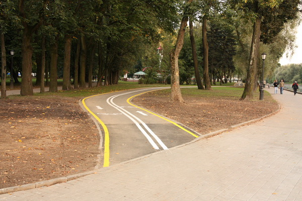
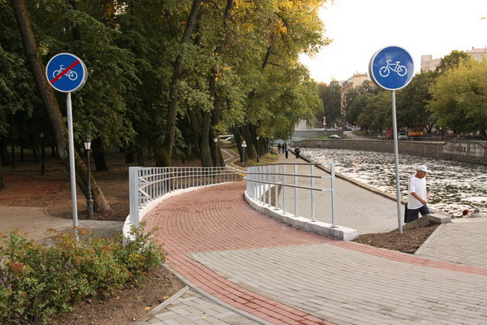
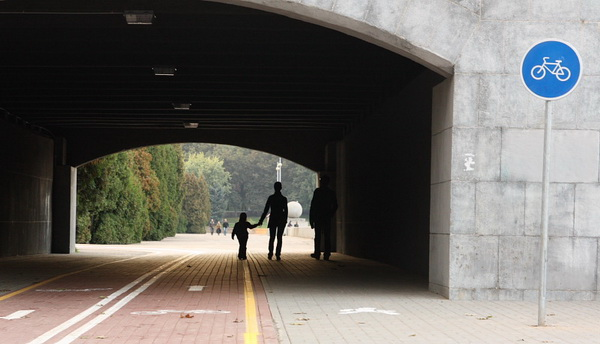

велосипедная дорожка — обособленная дорога либо выделенный конструктивно или с помощью линий горизонтальной дорожной разметки элемент дороги, предназначенные для движения водителей велосипедов (далее — велосипедисты), обозначенный дорожным знаком «Велосипедная дорожка»;
Определение велодорожки - классический пример развития ПДД: Фраза "обособленная дорога либо" добавилась в текст правил только в 2015 году, хотя, разумеется, отдельные (обособленные) велодорожки существовали задолго до этого.
Почитав про знак велосипадная дорожка вы узнаете, что хотя велосипедная дорожка предназначена для движения велосипедистов, при отсутствии тротуара или пешеходной дорожки по ней разрешается движение пешеходов.
Велосипедист - водитель велосипеда.

Минская велодорожка: на данном участке она - обособленная дорога.
Фото с сайта
tut.by

Минская велодорожка:на данном участке она - выделена конструктивно.
Фото с сайта tut.by

Минская велодорожка:на данном участке она - выделена с помощью линий горизонтальной дорожной разметки.
Фото с сайта tut.by